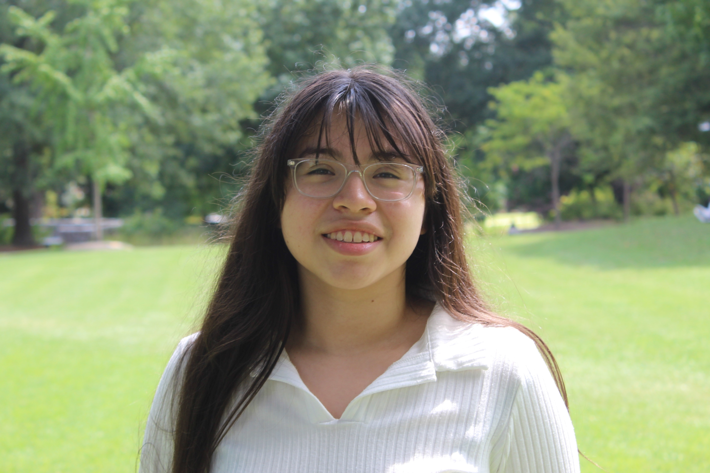

About Me
The story behind the lens
HELLO, I'M STELLA!
I'm a photographer who loves capturing life's most important moments.
I specialize in graduation photography because I understand the significance of this milestone. There's something magical about capturing the joy, pride, and excitement of this achievement. But my work doesn't stop there - I also love creating stunning headshots that help my clients make lasting impressions, and documenting events that bring people together.
My approach is simple: I believe in creating a comfortable, enjoyable experience that allows your authentic self to shine through. Whether we're doing a formal portrait session or candid event photography, I work to make you feel at ease in front of the camera.
My Philosophy
Every person has a unique story to tell, and I consider it a privilege to help tell yours through my lens. I'm not just taking photos - I'm preserving memories, celebrating achievements, and creating heirlooms that will be treasured for generations.
Let's Work Together